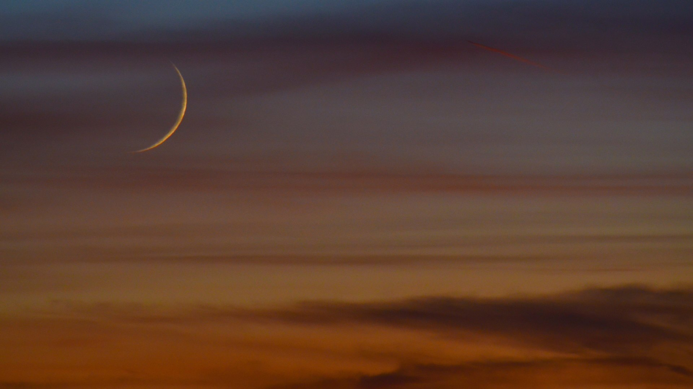
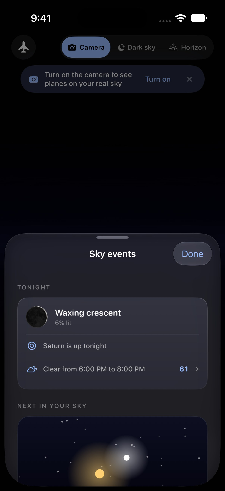
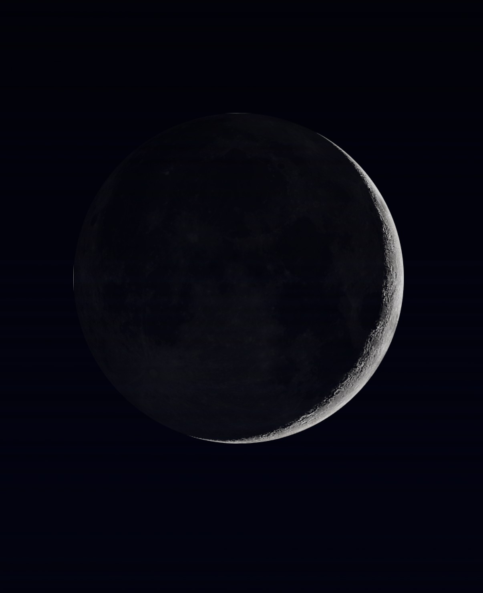
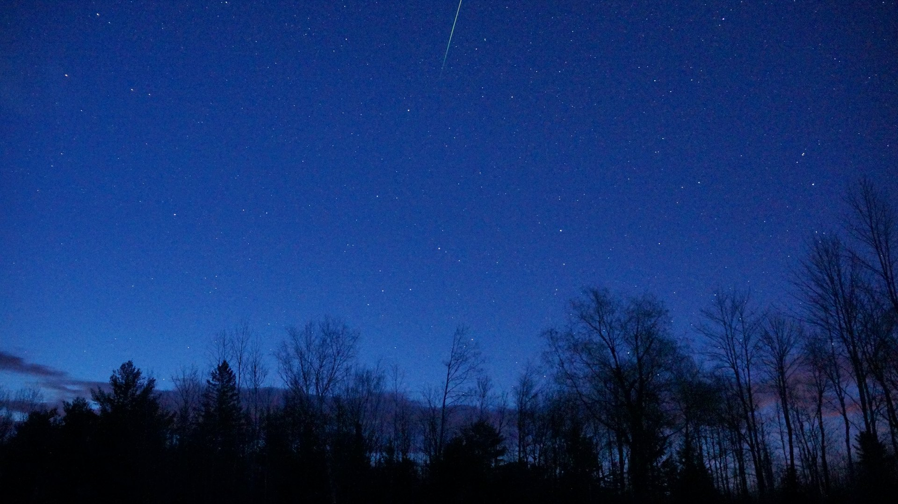
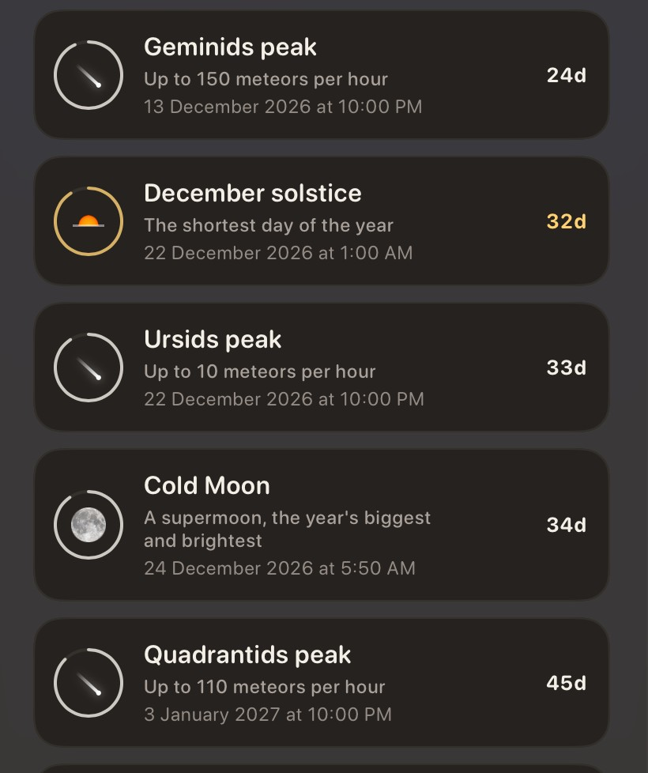
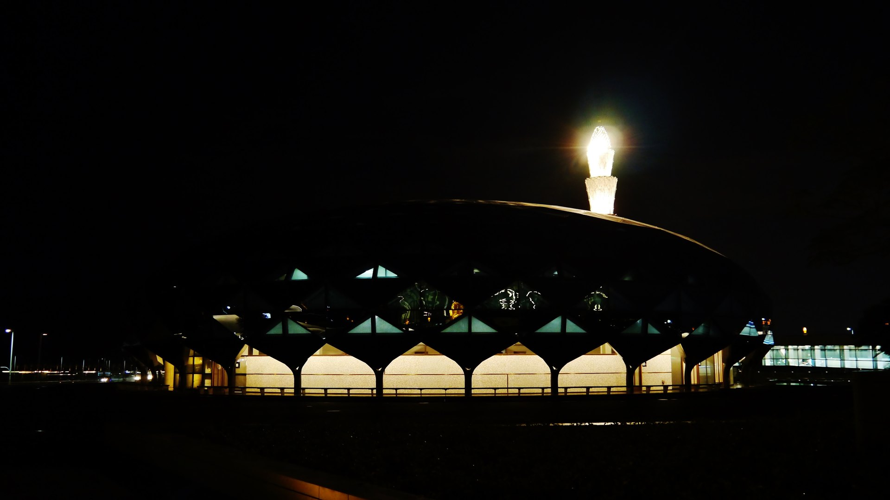
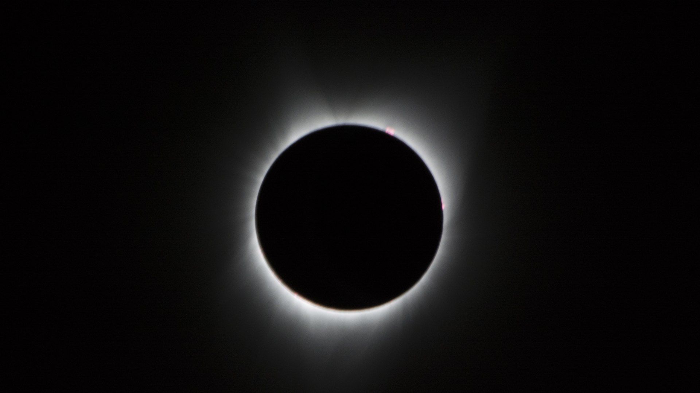
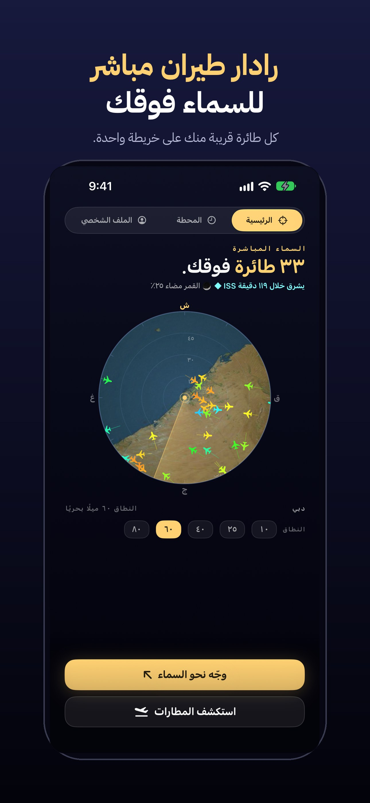

Five featuring nominations, each tied to a dated event. Every photograph is a real photo with its licence listed below. App images are simulator captures or App Store screenshots from the shipped app. Overhead is one app on iPhone and iPad; the Mac version shares the purchase.
Eid al-Fitr: the first crescent of Shawwal
Saudi Arabia, UAE, Kuwait, Qatar, Bahrain, Oman, Egypt, Jordan, Indonesia, Malaysia · 5 to 12 March 2027 · Arabic, English
The new Moon is at 09:29 UTC on 8 March 2027, a few hours before sunset in the Gulf, so 9 March is the first evening where a thin crescent is a realistic target. Eid al-Fitr is expected on 9 or 10 March, depending on the official sighting. Overhead shows the Moon at its real phase for the user's own place and places it over the live camera view. It makes no religious ruling.






Semana Santa and Easter: the planes of the long weekend
Mexico, Spain, United States, Canada, United Kingdom, Australia, Argentina, Chile, Colombia, Peru · 18 to 29 March 2027 · Spanish, English
Holy Week runs from Palm Sunday on 21 March to Easter Sunday on 28 March 2027. The March equinox is on 20 March at 20:24 UTC. Overhead names the aircraft the user points at, and Airport mode shows arrivals and departures at any airport in 3D.


Eta Aquariids under a new Moon
Australia, New Zealand, South Africa, Argentina, Chile, Uruguay, Brazil, Peru, Colombia, Ecuador, Bolivia, Mexico · 28 April to 8 May 2027 · English, Spanish
Peak on the night of 5 to 6 May 2027. The new Moon is on 6 May at 10:58 UTC. The shower favours the Southern Hemisphere; the Northern Hemisphere sees far fewer meteors. While a shower is active, Overhead marks its radiant in the camera view and points the way to it once it is above the horizon.




Eid al-Adha: the holiday sky over Gulf airports
Saudi Arabia, UAE, Kuwait, Qatar, Bahrain, Oman, Egypt, Jordan · 12 to 19 May 2027 · Arabic, English
Eid al-Adha is expected on 16 May 2027 (some countries will mark 17 May), with the day of Arafat on the 15th. Airport mode follows arrivals and departures at any airport, and the camera view names the plane overhead. The app is fully in Arabic.



2 August 2027: the total eclipse over Egypt and Saudi Arabia
Egypt, Saudi Arabia, Morocco, Algeria, Tunisia, Libya, Jordan, Gulf states, Yemen, Sudan · 20 July to 3 August 2027 · Arabic, French, English
Greatest eclipse at 10:07 UTC with up to 6 minutes 23 seconds of totality; the path crosses Morocco, Algeria, Tunisia, Libya, Egypt, Saudi Arabia and Yemen. Overhead computes the eclipse for the exact place the user stands and labels it total, annular or partial, with the time of maximum. It carries an eclipse-glasses warning. This is the Arabic and French companion to the earlier English, Spanish, German, Italian and Japanese nominations.




Dates behind the events
- Moon phases and the March equinox computed with the PyEphem astronomy library: new Moon 8 March 2027 09:29 UTC, 6 May 2027 10:58 UTC, 2 August 2027 10:05 UTC; equinox 20 March 2027 20:24 UTC.
- Ramadan, Eid al-Fitr and Eid al-Adha 2027 (Umm al-Qura estimates, subject to sighting): Makkah Live, Islamic calendar 1448, Khaleej Times, likely dates
- Easter Sunday 28 March 2027: calendardate.com, Easter 2027
- Eta Aquariids 2027, peak 5 to 6 May: NASA, Eta Aquarids, American Meteor Society calendar
- Total solar eclipse of 2 August 2027, greatest eclipse 10:06:40 UTC: timeanddate.com, NASA GSFC eclipse page. Never look at the Sun without certified eclipse glasses.
Photo credits
- Eid al-Fitr: Thin Crescent Moon in Sunset Sky.jpg, Carl Young, CC BY-SA 4.0. Cropped to 16:9.
- Semana Santa, sunset landing: Boeing 747 landing at Barcelona in a golden sunset.jpg, Jordi Cucurull, CC BY-SA 2.0. Cropped to 16:9.
- Semana Santa, dusk approach: (A) Avión en Atardecer (6680810831).jpg, Andrés Nieto Porras, CC BY-SA 2.0. Cropped to 16:9.
- Eta Aquariids: Eta Aquarid Meteor at Dawn - Flickr - ikewinski.jpg, Mike Lewinski, CC BY 2.0. Cropped to 16:9.
- Eid al-Adha, Doha airport mosque: Doha Hamad International Airport Mosque Exterior at Night 1.jpg, Zairon, CC BY 4.0. Cropped to 16:9.
- 2 August 2027 eclipse: 2017 Total Solar Eclipse (AFRC2017-0233-006).jpg, NASA Armstrong Flight Research Center / NASA/Carla Thomas, Public domain. Cropped to 16:9.
- App images: Overhead simulator captures and App Store screenshots by the developer. The Moon texture is NASA CGI Moon Kit imagery.